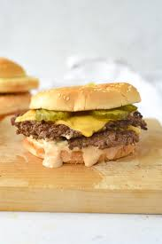

Dad's Hamburger Recipe

Description
This is my fathers personal recipe for his homemade burgers. They might not be the best but they remind me of better times, of when I was younger, when he would talk about life and I wouldn't understand anything he was saying.
Ingredients
- Bag of disposable styrofoam plate
- Any cheap hamburger buns with sesame seeds
- A 10 pack of the generic brand of hamburger patties
- A pack of kraft american cheese
- A can of diced pineapples
- A pack of sliced smoked ham
- Sour Cream
- Letuce
- A bag of charcoal
Steps to create the burger
- Place the charcoal in the grill and light it with paper towels.
- After around 5 minutes of the charcoal being lit, season the burger with steak seasoning and place the burger patties on the grill.
- Flip pattie every 2 minutes.
- Once the patties are around 70% done cooking, place the cheese onto the pattie.
- Once the patties are around 75% done cooking, grab a set of burger buns and put sour cream on them and place on grill.
- If anyone would like ham on their burger, place one slice of smoked ham onto the burger pattie.
- After around 2 minutes of the burger buns being on the grill, they should be removed as to not burn them.
- Grab a styrofoam plate and assemble your burger. Grab your buns, your burger, and put letuce and or diced pineapple on your burger if you'd like.
- Enjoy your burger!
Enjoy your homemade burger made by your own father!